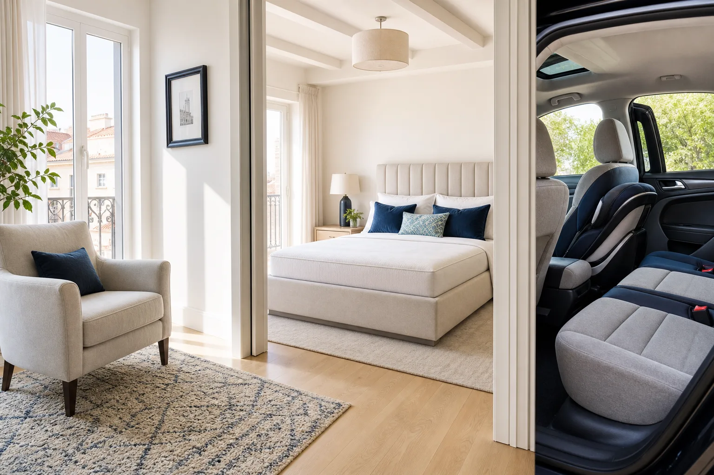

Lava Express · Lavado a vapor · Madrid
Limpieza profesional de tapicerías a domicilio en Madrid
En Lava Express aplicamos lavado a vapor e inyección-extracción para recuperar sofás, colchones, sillas, alfombras y tapicerías de coche. Revisamos el material, el tamaño y el estado de cada pieza para recomendarte el tratamiento más seguro y eficaz.
Revisamos tejido, tamaño y manchas antes de aceptar el trabajo


Lava Express · Lavado a vapor
Lava Express
Limpieza a domicilio en Madrid
Tratamiento adaptado al tejido
Inyección y Extracción profunda
¿Qué necesitas limpiar?
Elige una categoría
Accede directamente al servicio que necesitas y descubre qué incluye, cuánto tarda y cómo pedir tu presupuesto.
SofásSofás, chaise longue y rinconeras→
Sillas y butacasComedores, orejeros, bancos y pufs→
ColchonesIndividuales, matrimonio y king→
Alfombras y textilesAlfombras, moquetas, cortinas y visillos→
Vehículos y bebéCoches, carritos y sillas infantiles→
EmpresasOficinas, alojamientos, clínicas y locales→
Precios claros antes de reservar
Una orientación rápida, sin letra pequeña
Ver precios orientativosTarifas ajustadas al mercado de Madrid. El importe final se confirma al revisar tamaño, tejido, manchas y fotografías.
01Lavado a vaporTratamiento profesional y controlado.
02Maquinaria profesionalExtracción profunda adaptada al tejido.
03Productos segurosTe informamos si hay niños, mascotas o sensibilidad.
04Precio confirmadoRevisamos fotos antes de reservar.
01
Envía 2 o 3 fotos
Una general y otra de las manchas. Añade tu municipio.
02
Recibe precio y alcance
Te indicamos tratamiento, importe y tiempo aproximado.
03
Elige tu cita
Acordamos día y franja. Pagas el precio confirmado.
Enviar fotos y recibir precioIndica municipio, servicio y adjunta 2–3 fotos. Respuesta habitual en horario comercial.
Catálogo de servicios
Un tratamiento pensado para cada espacio
En lugar de hacerte recorrer una lista interminable, agrupamos las soluciones por tipo de necesidad. En cada página encontrarás precios orientativos, tiempos, preguntas frecuentes y un WhatsApp preparado.
Hogar y descanso
Sofás, chaise longue, sillas, butacas y colchones. Recuperamos el confort de las piezas que más usas.
Ver limpieza de sofás Ver limpieza de colchonesTextiles y movilidad
Alfombras, cortinas, tapicería de coche, carritos y sillas infantiles con revisión previa del tejido.
Ver alfombras y textiles Ver vehículos y bebéNegocios y alojamientos
Planes por lotes para oficinas, clínicas, locales y alquileres vacacionales, coordinados para no interrumpir tu actividad.
Ver soluciones para empresas Hablar con un especialistaCobertura en la Comunidad de Madrid
¿Trabajamos en tu zona?
Selecciona tu municipio y te indicamos al instante cómo solicitar presupuesto.
01
Elige tu municipioNo necesitas saber a qué zona o comarca pertenece.
Más consultados:
Cobertura confirmada
Pedir presupuesto
Ver las 24 localidades atendidas
Trabajos recientes
Comprueba el acabado antes de decidir
Consulta ejemplos reales y recientes en nuestra galería. Si tu tejido o mancha se parece a uno de ellos, envíanos una captura junto con tus fotos.

Consejos sin trucos milagro
Antes de limpiar, conviene saber qué estás tratando
01 · Sofás¿Se puede limpiar tu sofá con inyección-extracción?Etiqueta, tejido, pruebas y fotos necesarias→
02 · ColchonesÁcaros: qué aporta una limpieza y qué no puede prometerInformación responsable con fuentes sanitarias→
03 · VehículosQué incluye realmente una limpieza de tapiceríaUna lista para comparar presupuestos→
Contacto directo en Madrid
Solicita presupuesto sin compromiso
Envíanos fotos de tu sofá, colchón o vehículo por WhatsApp y te respondemos con una valoración clara y el siguiente hueco disponible.